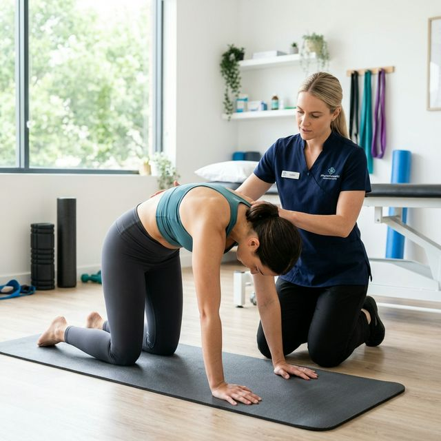

Comprehensive Physiotherapy Guide: Relieving Back Pain Permanently

Back pain is more than an inconvenience; it can be a debilitating barrier to a happy life in Wayanad. Whether you are dealing with a sudden acute strain or years of chronic discomfort, understanding how to manage it naturally is essential.
At Physio Dynamics Panamaram, we believe in empowering patients through education. This guide provides an in-depth look at the most effective physiotherapy exercises, why they work, and how to perform them safely at home.
Understanding the Root Causes of Back Pain
Most back pain in Wayanad stems from non-specific mechanical issues—meaning the joints, muscles, or ligaments aren't moving quite right. Common factors include:
- Prolonged Sitting: Common among office workers and drivers.
- Improper Lifting: Frequent in agriculture and labor sectors.
- Weak Core: When your core is weak, your spine takes the full weight of your body.
- Postural Stress: The "slumped" posture that modern life encourages.
Top 5 Targeted Exercises for Long-Term Relief
Pelvic Tilts
Why it works: This exercise gently "wakes up" the small muscles around your spine and helps restore neutral pelvic alignment.
Step-by-Step Instruction:
- Lie on your back with knees bent and feet flat on the floor.
- Flatten your lower back against the floor by tightening your abdominal muscles and tilting your pelvis up slightly.
- Hold for 5-10 seconds while breathing normally.
- Repeat 15 times, 3 times a day.
Knee-to-Chest Stretch
Why it works: It provides a deep stretch to the lower back muscles, which are often tight and overworked from standing or sitting all day.
- Lie on your back with knees bent.
- Use your hands to gently pull one knee up to your chest.
- Hold for 30 seconds. Feel the stretch in your lower back.
- Switch legs and repeat. Do this 3 times per side.
Bridge Exercise (Core Strengthening)
Diagnostic Tools
Our clinic in Panamaram provides precise clinical testing to distinguish between muscle strain, disc issues, and joint-related back pain.
Why it works: A strong back needs strong glutes. The bridge exercise builds the power needed to support your spine during movement.
- Lie on your back with knees bent and feet flat.
- Lift your hips off the floor until your knees, hips, and shoulders form a straight line.
- Squeeze your glutes at the top.
- Slowly lower back down. Repeat 12-15 times.
Bird-Dog (Stability Training)
Why it works: This is the ultimate "stability" exercise. It teaches your body how to maintain a flat back while the rest of your body moves.
- Start on all fours (hands and knees).
- Extend your right arm forward and your left leg backward at the same time.
- Keep your back flat—don't let your hips tilt.
- Hold for 5 seconds, return, and switch sides. Perform 10 repetitions per side.
Cat-Cow Stretch
Why it works: This rhythmic movement lubricates the joints of the spine and relieves stiffness after long periods of inactivity.
- Start on all fours.
- Inhale and arch your back (Cow), looking up toward the ceiling.
- Exhale and round your back (Cat), tucking your chin to your chest.
- Move slowly between these positions for 1-2 minutes.
Ergonomic Tips for Your Home and Office
Exercises alone aren't enough if you return to bad habits. If you live or work in Wayanad, follow these ergonomic principles:
Sit Smarter
Ensure your feet are flat on the floor and your lower back is supported by the chair's curve.
Lift with Legs
Never bend at the waist to pick up objects. Squat down and use your leg power to lift.
Frequently Asked Questions (FAQ)
When to Consult a Professional
If your back pain is accompanied by numbness, leg weakness, or follows a major fall, do not attempt these exercises. Visit a physiotherapy clinic in Wayanad for a thorough medical evaluation.
Find Our Clinic
Physio Dynamics
UB City Centre Building, Near Crescent Public School,
Panamaram, Wayanad, Kerala 670721
+91 62829 29104
physiodynamics10@gmail.com
Mon - Sat: 8:00 AM - 7:00 PM
Sunday: Closed (Emergency Only)